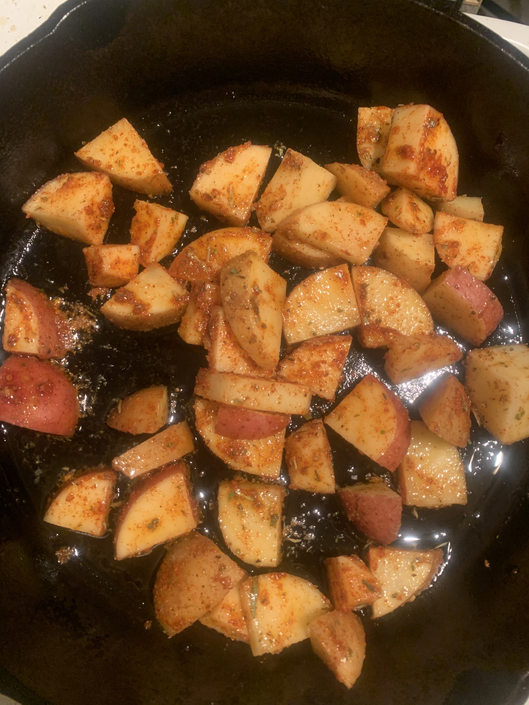

JPC's Potatoes

Description
A simple, delicious recipe for potatoes with a variety of interchangeable vegetables. Works very well with add fried eggs and/or bacon
Ingredients
- potatoes
- peppers
- onions
- garlic
- vegetables
- spices
Steps
- rinse and prep all ingredients
- in a preheated skillet with oil at medium heat add potatoes with salt
- once potatoes are slightly browned on one side flip to other
- once potatoes are browned on both sides add peppers and occasionally stir
- after peppers have simmered for a bit add onions and spices
- allow onions to cook briefly and add garlic
- once garlic has begun to cook add your choice of vegetables
- once vegetables have properly cooked add more spices mix all together and serve
- enjoy!
Home